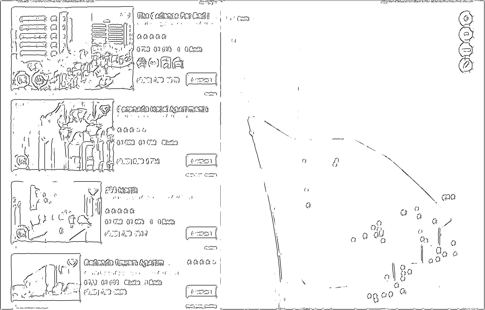
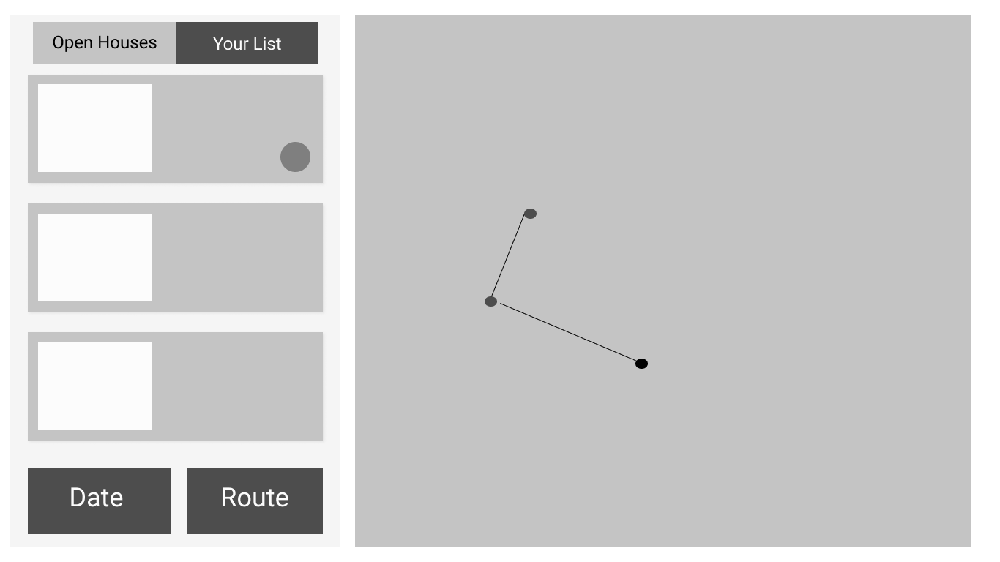
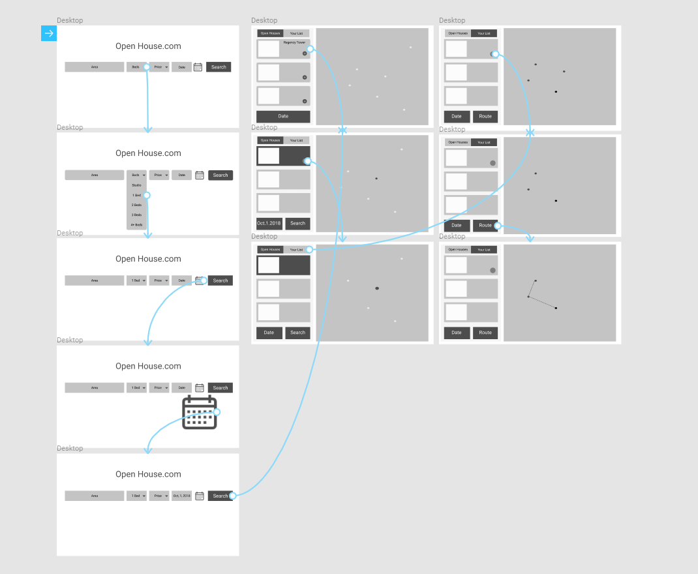
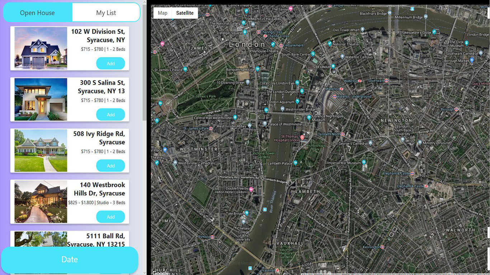
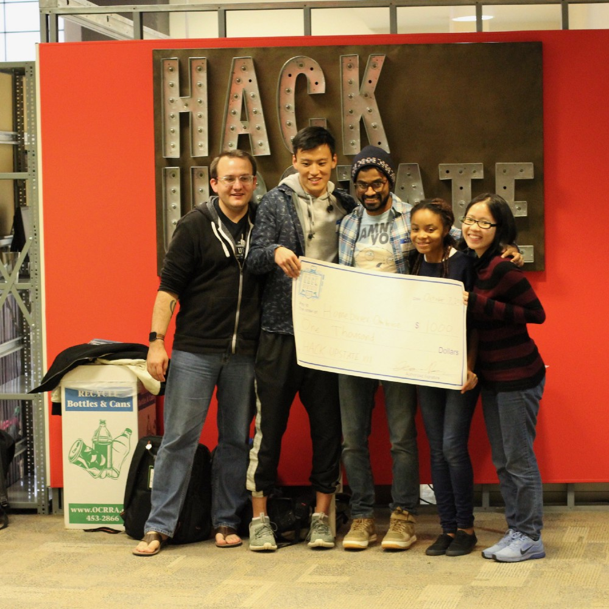

Overview
In an effort to make the home buying process more efficient,
my team and I built a web application that allows users to search for open houses
based on their personal preferences.
For instance, a user can search for open
houses in their area based on date and location. They can then optimize their
route in a way that maximizes the number of open houses they can visit in a single trip.
To build the web application they used HTML , CSS, and Javascript.
For the route optimization algorithm, we used the Esri ArcGIS ,and a Javascript API.

Target User
The target User for the Open House app are adults who are are seeking to save time in their day We take into consideration that most home buyers are working class and ages may vary.
Role
Having had previous experience developing responsive prototypes,I was asigned to take part of the Design process from sketching to developing a mock web page.
Sketch
Due to time limitation (24r) we decided to quickly sketch out what we wanted to include in the application.The sketches explored some of the visual layout to consider.

Wireframe
Based on the rapid sketches a wireframes were created for the interface using Figma.
After a user pick a date, house type, and price range,
a list of result will display with their corresponding locations on the map.
Users can add open houses to their "list" and select houses they would like to see the same day.
The application will automatically generate the route.


Visual
This is a visual of what the ultimate layout of the application would look like.

Prototype
Using Protopie.io a quick and simple low-fi prototype was created in order to show the interactions users will have with the application.

Outcome
We Won!. Although the application was not complete withing the 24hr time slot. We were able to make the best use of Esri ArcGIS.
